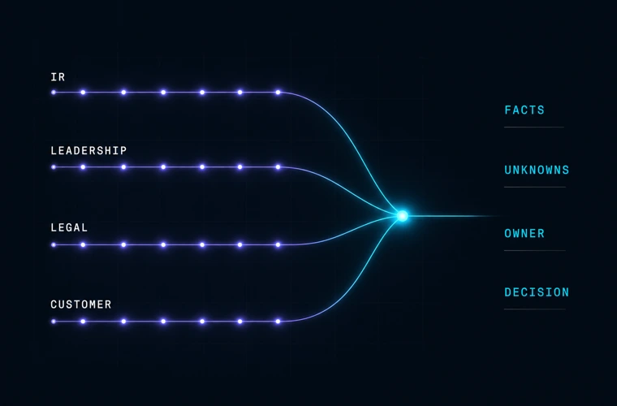

For the part after detection
The alert is clear. The business answer isn’t.
Bring one hard incident. Compare notes with the founder. No production access.

For the part after detection
Bring one hard incident. Compare notes with the founder. No production access.
